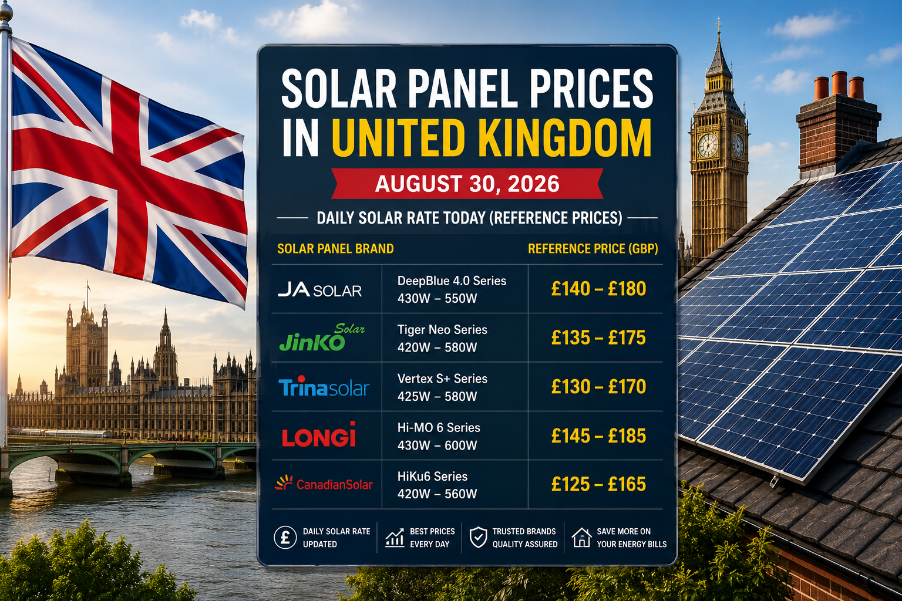

Solar Panel Price in United Kingdom Today — August 30, 2026
Daily solar rate reference for popular solar panel brands and models in the UK.

Looking for the solar panel price in United Kingdom today? UK solar panel rates vary with brand, wattage, efficiency, technology, supplier, order size and installation requirements. This August 30, 2026 guide provides a practical reference for comparing the latest UK solar panel rates in British pounds (GBP).
For this daily solar rate comparison, we are focusing on five widely available brands: JA Solar, Jinko Solar, Trina Solar, LONGi and Canadian Solar.
Solar Panel Price in United Kingdom Today: August 30, 2026
| Brand | Popular Model / Series | Typical Power | Reference Daily Rate |
|---|---|---|---|
| JA Solar | DeepBlue 4.0 Series | 430–550W | £140–£180 per panel |
| Jinko Solar | Tiger Neo Series | 420–580W | £135–£175 per panel |
| Trina Solar | Vertex S+ Series | 425–580W | £130–£170 per panel |
| LONGi Solar | Hi-MO 6 Series | 430–600W | £145–£185 per panel |
| Canadian Solar | HiKu6 Series | 420–560W | £125–£165 per panel |
Market context: UK supplier and market references can be lower or higher than these visual reference ranges depending on whether the price is trade, retail, VAT-inclusive, delivery-inclusive or part of an installation quotation. Recent 2026 UK pricing sources place mainstream panels broadly around the low-to-mid hundreds of pounds per panel, while installed 4kW systems commonly fall around £6,000–£8,000. citeturn0search2turn0search4
1. JA Solar DeepBlue 4.0 Price in the UK
JA Solar's DeepBlue range is a mainstream N-type option frequently considered for UK residential installations. Exact pricing depends on wattage, stock, supplier and whether the panel is sold individually or as part of a complete system.
August 30, 2026 reference rate: £140–£180 per panel.
2. Jinko Solar Tiger Neo Price in the UK
Jinko Solar Tiger Neo is a popular N-type TOPCon family. It is commonly positioned as a value-focused choice for UK solar projects, but the exact generation and output should be checked before comparing quotations.
August 30, 2026 reference rate: £135–£175 per panel.
3. Trina Solar Vertex S+ Price
Trina Solar's Vertex S+ series is designed for residential applications and offers modern N-type technology. It can be a useful option when comparing efficiency, roof layout and equipment cost together.
August 30, 2026 reference rate: £130–£170 per panel.
4. LONGi Solar Panel Price in the UK
LONGi has a broad range of high-efficiency modules used across residential and commercial projects. Its Hi-MO families are worth comparing when roof space is limited and output per square metre matters.
August 30, 2026 reference rate: £145–£185 per panel.
5. Canadian Solar HiKu6 Price
Canadian Solar is another established manufacturer with a wide range of modules. The HiKu family can be attractive to buyers looking for a mainstream balance between output and equipment cost.
August 30, 2026 reference rate: £125–£165 per panel.
What Affects the Daily Solar Rate in the UK?
- Panel wattage: Higher-output modules can cost more per panel.
- Efficiency: Higher efficiency may carry a premium but can reduce the number of panels needed.
- Technology: TOPCon, bifacial and other newer technologies can occupy different price tiers.
- Supplier and quantity: Trade, pallet and single-panel prices can differ substantially.
- Installation: A complete quotation includes labour, mounting, inverter, electrical work and other components.
- UK location and roof: Scaffolding, roof type, access and regional labour costs can change the final installed price.
Solar Panel Price Per Watt in the UK
Comparing only one panel's price can be misleading because panels have different wattages. A better method is to compare solar panel price per watt, efficiency, warranty, degradation and expected output.
Recent UK market references show mainstream module pricing can sit around roughly £0.13–£0.35 per watt depending on source, model, VAT basis and whether the price is trade or retail. citeturn0search0turn0search4
Solar System Price in the UK Today
Panel price is only one part of the total solar investment. Recent UK 2026 guides put a typical 4kW installed rooftop system around £6,000–£8,000, with the final quotation depending on roof complexity, inverter, mounting, scaffolding and other equipment. citeturn0search4turn0search11
UK Solar Rate Today: What Buyers Should Compare
When checking the solar rate today, do not choose a panel only because it has the lowest headline price. Compare the exact model, price per watt, efficiency, product warranty, performance warranty, installer quality and total installed cost.
New UK Solar Option: Plug-In Solar
There is also a new development in the UK solar market. As of August 27, 2026, approved plug-in solar systems became available under new rules in England, Wales and Scotland, giving some households another way to generate electricity. These are small systems rather than replacements for a normal rooftop array. Current reports put some complete kits in the roughly £400–£1,200 range depending on the product and configuration. citeturn0news21turn0news23
Final Takeaway: UK Solar Rate Today
The solar panel price in United Kingdom today depends on the exact model, supplier and project. For August 30, 2026, this daily solar rate reference compares JA Solar, Jinko Solar, Trina Solar, LONGi and Canadian Solar in GBP.
For a buying decision, request current quotations for the exact panel and compare the complete installed system rather than relying on a single panel price.
← Back to Solar Panel Prices